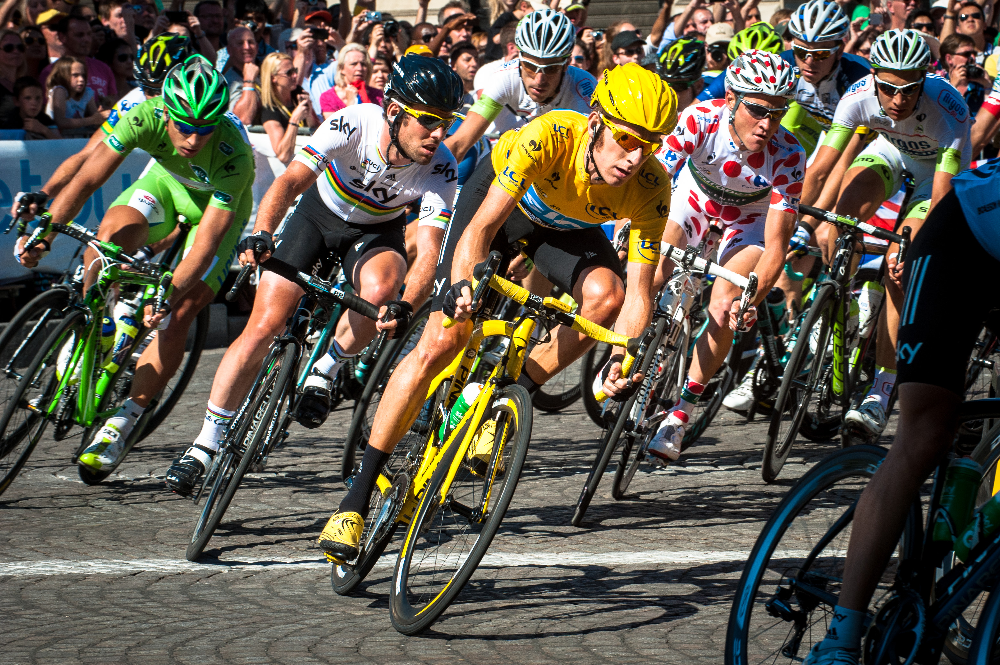

There are usually between 20 and 22 teams, with nine riders in each. All of the stages are timed to the finish; the riders' times are compounded with their previous stage times. The rider with the lowest cumulative finishing times is the leader of the race and wears the yellow jersey. While the general classification garners the most attention, there are other contests held within the Tour: the points classification for the sprinters, the mountains classification for the climbers, young rider classification for riders under the age of 26, and the team classification for the fastest teams. Achieving a stage win also provides prestige, often accomplished by a team's cycling sprinter specialist.
